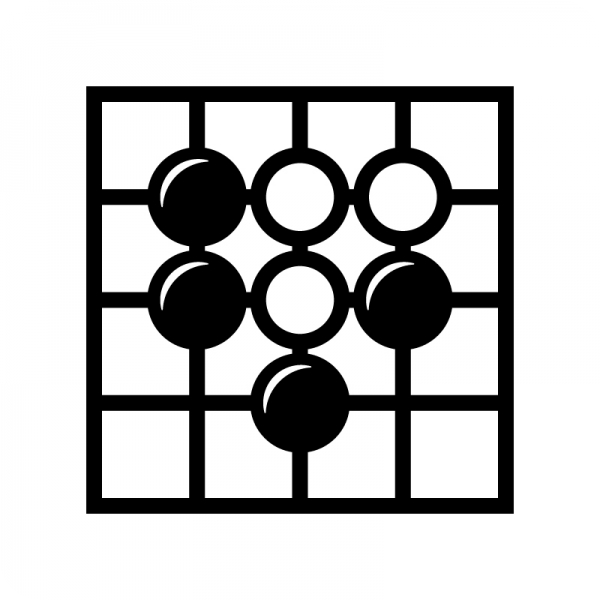

第５回 バウンディングエナジー
静的なイメージを破壊するエナジーという単語に石が張るように守って活き活きとしてほしいため
バウンディングという単語を用いた。
まさか諸君らは守りについて消極的なイメージを持っていたりするまいな！？
それでは守りをロマンのある楽しい手として打てなくなってしまうのだ！！
・守りの美醜
・強い石と弱い石
・防御の方法と石の連絡について
守るという行いは本来ポジティブなものであると言ったが、たしかに苦しい守りも存在する。
ではどのようにポジティブかネガティブか分けられるのだろうか？
自分はそれを以下の二つのように分ける。 これらがなぜ嬉しいか、苦しいかを解説する
嬉しい守り
ではそもそも守るということがなぜ嬉しい状況につながるのだろうか？それはその守りの手が、戦うエネルギーを与えているためである。
では石の集団の力関係に注目して見ていってほしい。

上記の棋譜に於いて、白の一団と黒の一団がせめぎ合っている状態における白番である。
ここで１つ目の棋譜のように、もし白が自分を守らなければこのようになってしまう。
ではここで２つ目の棋譜のように、白が逃げ出してみる、つまりより広いところへ動き出して強くなるとしよう。
このように黒白双方が攻められることなく悠々と逃げ出していく展開になるが、それは黒白双方の石が互角の強さであるためだ。
ではここで３つ目の棋譜のように、黒がほかのところを打つ、つまりこの２つの石のパワーバランスが崩壊した状況を見てみよう。
結果として黒が白に襲われることとなった。
イメージとしてはこのように弱い石が強い石に襲われるのである。
以上のように
- １.白のパワーが弱いままである
- ２.双方互角である場合
- ３.逆にパワーバランスが白優勢となった場合
と様々な状況を見てきた。
この中で重要なのは、弱い石の周りに石を置くことでパワーバランスが変動したということなのだ。
諸君にはもうお分かりかもしれないが、今回の講座における良い守りとはパワーバランス勝負で優位に立てるようにするという手なのである。
後程解説する石の強弱に強く密接するのだが、石のパワーバランスが崩れたら一気に攻撃のチャンスが生まれ、弱い方が後程解説するように苦しい守り方をすることとなる。
そのために弱い側大きく不利な展開を強いられることになってしまうのである。
ここまでを簡単に表すと、争いはそもそも相手より自分が弱ければ話にもならないという事であり、自分を強くして有利に進めるというのが良い守りなのである。。
多少手筋などでごまかせたとしても基本的にその条理から外れることはないのだ。
苦しい守り
では守りとは常に良いことであるのだろうか？否、圧倒的に強い相手に押しつぶされるように守るのは明らかに苦しいのである。
どういった不利な展開になるかについて、根本的に言うならば地にもならないなどといった微妙なところを強制的に打たされるということなのだ。
加えてより極端に言ってしまえば、もし取られでもしたらその分の手をパスしたとも言えよう。
ではそういった苦しい場面を実際に見てもらおう。
石の強弱について
良い守り方について